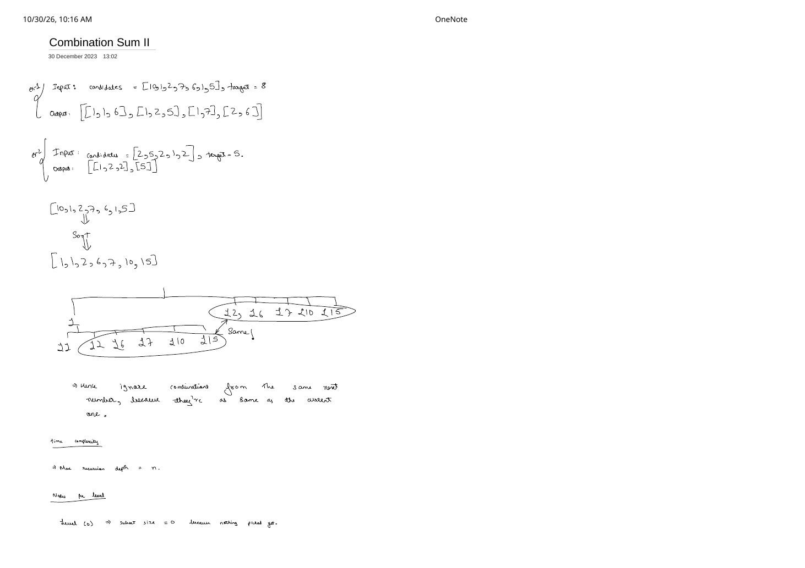
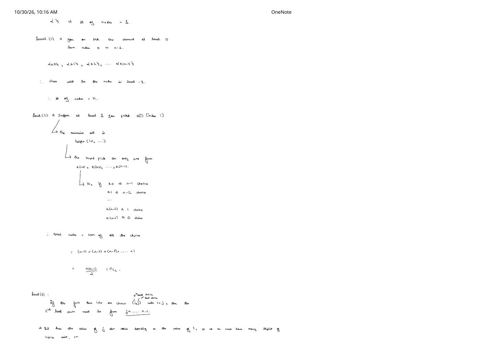
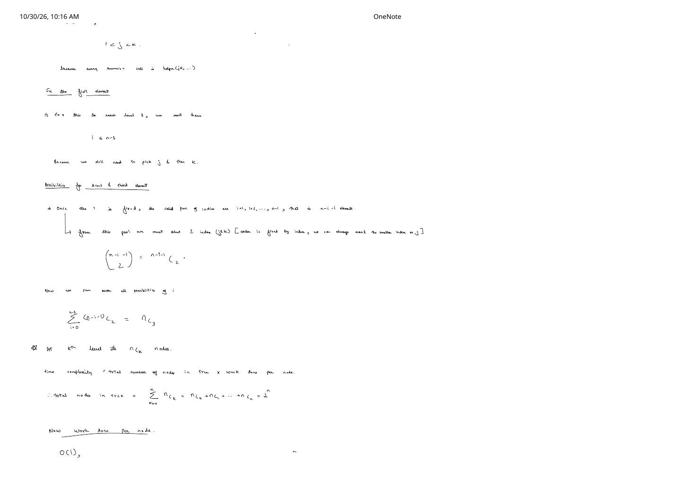
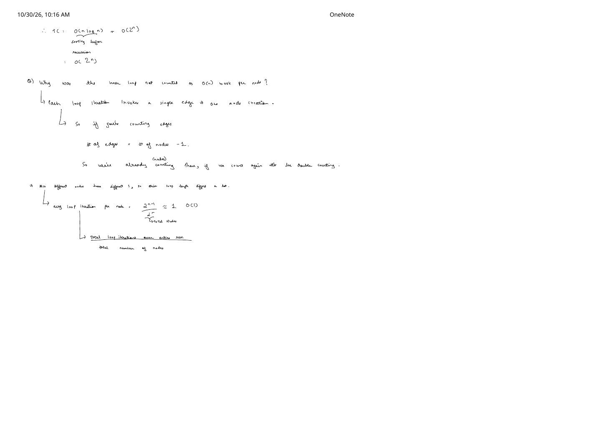

Combination Sum II (LeetCode 40): Sibling Pruning, the Binomial $2^n$ Proof & Edge Counting
Expanded from handwritten competitive coding study note: 06_Combination_Sum_II.pdf (4 pages)
06_Combination_Sum_II.pdf is the longest and most mathematically rigorous note in the Backtracking series. Beyond combining Subsets II's sibling deduplication with Combination Sum's sorted cutoff, pages 2–4 prove from scratch why a forward for (j = i; j < n; ++j) dfs(j + 1) recursion tree has $\binom{n}{k}$ nodes at level $k$ ($2^n$ total)—and why the inner for loop does not multiply tree complexity by an extra $O(n)$ factor!
Problem Statement
LeetCode 40 · Combination Sum II
Given a collection of candidate numbers candidates (which may contain duplicates) and a target number target, find all unique combinations in candidates where the candidate numbers sum to target. Each number (index) in candidates may only be used once in the combination, and the solution set must not contain duplicate combinations.
- Example 1 (from note):
candidates = [10, 1, 2, 7, 6, 1, 5], target = 8→[[1, 1, 6], [1, 2, 5], [1, 7], [2, 6]]. - Example 2 (from note):
candidates = [2, 5, 2, 1, 2], target = 5→[[1, 2, 2], [5]].
Intuition: Why Duplicate Sibling Subtrees Are Redundant (Page 1)
Sort Example 1's input [10, 1, 2, 7, 6, 1, 5] into ascending order [1, 1, 2, 5, 6, 7, 10]. Compare the two subtrees rooted at the first 1 (index 0) and the second 1 (index 1):
- First
1(index0) branches to[1, 1](using both1s!) plus all pairs with remaining distinct positions:[1, 2], [1, 5], [1, 6], [1, 7], [1, 10]. - Second
1(index1) can only branch to indices $\ge 2$:[1, 2], [1, 5], [1, 6], [1, 7], [1, 10]—the exact same pairs circled as “Same!” on page 1 of the note!
Hence, once we sort candidates, we ignore any sibling choice j > i whose value equals its immediate predecessor candidates[j - 1], while still recursing to j + 1 so each array position is used at most once.
06_Combination_Sum_II.pdf. Skipping idx 1 at level 1 deletes the entire duplicate group on the right while preserving [1, 1, 6] inside [1, 1] on the left.Clean C++ & Python Implementations
#include <algorithm>
#include <vector>
using namespace std;
class Solution {
void helper(int i, int rem, const vector<int>& a,
vector<int>& path, vector<vector<int>>& ans) {
if (rem == 0) {
ans.push_back(path); // valid combination found
return;
}
for (int j = i; j < (int)a.size(); ++j) {
if (j > i && a[j] == a[j - 1]) continue; // 1. Prune duplicate sibling
if (a[j] > rem) break; // 2. Sorted sum cutoff
path.push_back(a[j]);
helper(j + 1, rem - a[j], a, path, ans); // j + 1: each index used at most once
path.pop_back();
}
}
public:
vector<vector<int>> combinationSum2(vector<int>& candidates, int target) {
sort(candidates.begin(), candidates.end());
vector<vector<int>> ans;
vector<int> path;
helper(0, target, candidates, path, ans);
return ans;
}
};class Solution:
def combinationSum2(self, candidates: list[int], target: int) -> list[list[int]]:
candidates.sort()
ans: list[list[int]] = []
path: list[int] = []
n = len(candidates)
def helper(i: int, rem: int) -> None:
if rem == 0:
ans.append(path[:])
return
for j in range(i, n):
if j > i and candidates[j] == candidates[j - 1]:
continue
if candidates[j] > rem:
break
path.append(candidates[j])
helper(j + 1, rem - candidates[j])
path.pop()
helper(0, target)
return ansThe 3-Page Binomial $2^n$ Node Proof (06_Combination_Sum_II.pdf, Pages 1–3)
In the worst case (all $n$ elements distinct and target large enough that no sum cutoff fires early), maximum recursion depth is $n$. How many nodes exist at each level of helper(j + 1, ...)? Pages 1–3 derive this level by level:
- Level 0 (subset size 0): Nothing picked yet $\implies \{\}$ → $1 = \binom{n}{0}$ node.
- Level 1 (subset size 1): Pick one index from $0 \dots n - 1$: $\{a_0\}, \{a_1\}, \dots, \{a_{n-1}\}$ → $n = \binom{n}{1}$ nodes.
- Level 2 (subset size 2): Suppose at level 1 we picked $a_i$ (index $i$). Since the recursive call is
helper(i + 1, ...), the second pick must come from $\{a_{i+1}, \dots, a_{n-1}\}$:- If $a_0$ was picked → $n - 1$ choices;
- If $a_1$ was picked → $n - 2$ choices; $\dots$;
- If $a_{n-2}$ was picked → $1$ choice; if $a_{n-1}$ → $0$ choices.
- Level 3 (subset size 3, indices $i \lt j \lt k$): Because every recursive step passes
j + 1, any 3-element branch corresponds to a strictly increasing index triple $i \lt j \lt k$:- Fix the first index $i$: For a branch to reach level 3, we must have $i \le n - 3$ (we still need two indices $j$ and $k$ to its right).
- Count pairs $(j, k)$ for fixed $i$: From the remaining pool $\{i + 1, i + 2, \dots, n - 1\}$ of size $n - i - 1$, selecting any 2 indices uniquely fixes $j \lt k$ (the smaller index is $j$, the larger is $k$) in $\binom{n - i - 1}{2}$ ways.
- Sum over $i = 0 \dots n - 3$ (Hockey-Stick Identity): $$\sum_{i=0}^{n - 3} \binom{n - i - 1}{2} = \binom{n - 1}{2} + \binom{n - 2}{2} + \dots + \binom{2}{2} = \binom{n}{3}\text{ nodes!}$$
General Level $k$ & Total Tree Size
At the $k$-th level there are $\binom{n}{k}$ nodes. Summing over all depths $k = 0 \dots n$ by the Binomial Theorem:
$$\text{Total Nodes in Tree} = \sum_{k=0}^{n} \binom{n}{k} = \binom{n}{0} + \binom{n}{1} + \dots + \binom{n}{n} = 2^n.$$Why Wasn't the Inner Loop Counted as $O(n)$ Work Per Node? (Page 4 Q&A)
Page 4 of 06_Combination_Sum_II.pdf addresses a classic misconception: seeing for (int j = i; j < n; ++j) inside $2^n$ calls, many candidates multiply $2^n \times n$ even when counting pure tree traversal without leaf copies. That is double counting for two equivalent reasons:
- Edge–Node Bijection: In the unpruned tree, every single loop iteration traverses one tree edge to create one child node. Any tree with $V = 2^n$ nodes has total edges:
$$\#\text{edges} = \#\text{nodes} - 1 = 2^n - 1.$$
Counting $2^n$ nodes has already counted all $2^n - 1$ loop iterations across the entire run! (And when pruning triggers via
continueorbreak, total iterations only shrink below $2^n - 1$.) - Average Loop Iterations Per Node: Different nodes receive very different start indices $i$ (half of all nodes have $i = n$ and run $0$ iterations!). Dividing total loop iterations across the entire execution by total nodes gives: $$\text{Avg loop iterations per node} = \frac{2^n - 1}{2^n} \approx 1 = O(1).$$
- Time Complexity: $O(n \log n + 2^n)$ for sorting + tree exploration, plus $O(k \cdot n)$ to copy the $k$ valid combinations that actually hit
rem == 0(bounded in the absolute worst case by $O(n \cdot 2^n)$). - Auxiliary Space: $O(n)$ recursion stack and active
path.
Key Edge Cases
- Massive duplicate arrays (e.g., 100 copies of
1withtarget = 30): Withoutif (j > i && a[j] == a[j - 1]) continue;, LeetCode's adversarial test case of thirty1s explores $\binom{30}{15} = 155{,}117{,}520$ duplicate branches and TLEs; with sibling pruning, it collapses into a single linear chain of 30 steps ($O(n)$)! - Ordering of guards inside the loop: Putting
if (a[j] > rem) break;first is even slightly faster because ifa[j] > rem, we stop the loop immediately regardless of whethera[j]is a duplicate.
From the Handwritten Notes
View original handwritten page — 06_Combination_Sum_II.pdf (Page 1: Examples & duplicate sibling subtrees)


06_Combination_Sum_II.pdf, page 1: worked examples on target = 8 and target = 5, sorting to expose adjacent 1s, and circling the identical pair subtrees marked “Same!”.View original handwritten page — 06_Combination_Sum_II.pdf (Page 2: Level 1 (n) & Level 2 (nC2) node counts)


06_Combination_Sum_II.pdf, page 2: counting $(n - 1) + (n - 2) + \dots + 1 = \frac{n(n-1)}{2} = \binom{n}{2}$ nodes at level 2 and setting up level 3.View original handwritten page — 06_Combination_Sum_II.pdf (Page 3: Hockey-stick sum to nC3 & total 2^n nodes)


06_Combination_Sum_II.pdf, page 3: summing $\sum_{i=0}^{n-3} \binom{n-i-1}{2} = \binom{n}{3}$, generalizing to $\binom{n}{k}$ nodes at level $k$, and summing $\sum_{k=0}^{n} \binom{n}{k} = 2^n$.View original handwritten page — 06_Combination_Sum_II.pdf (Page 4: Why inner loop is O(1) amortized per node)


06_Combination_Sum_II.pdf, page 4: Q&A proving via $\#\text{edges} = \#\text{nodes} - 1$ and $\frac{2^n - 1}{2^n} \approx 1$ that inner loop iterations are already accounted for by node counts.